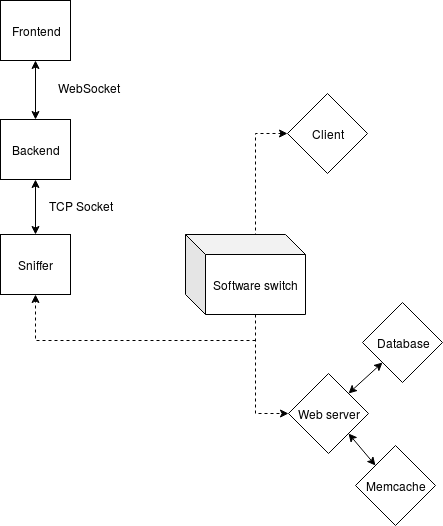
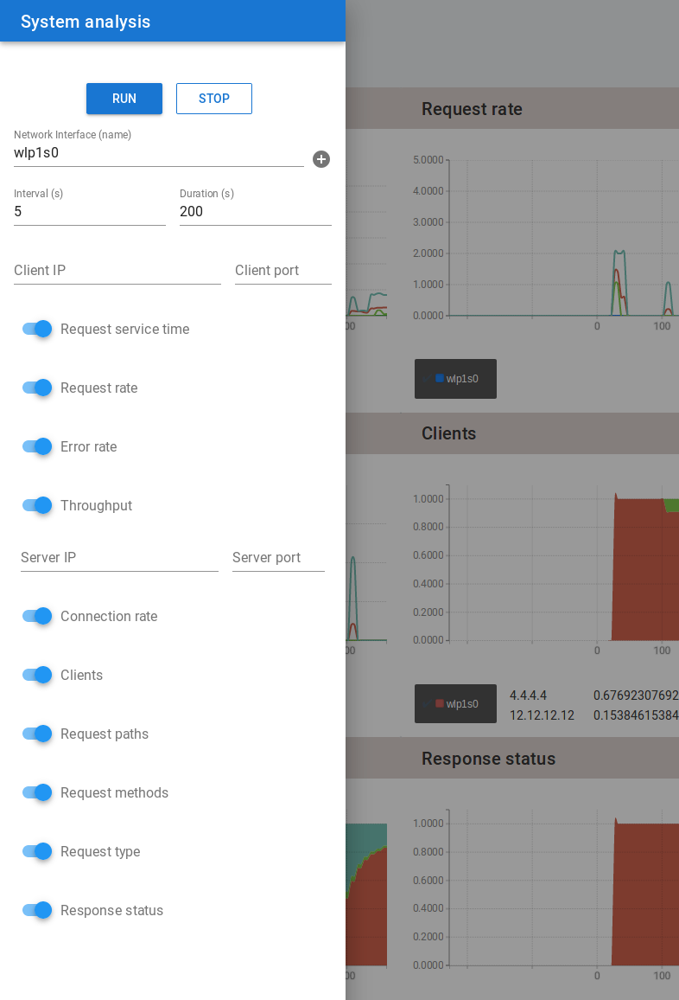
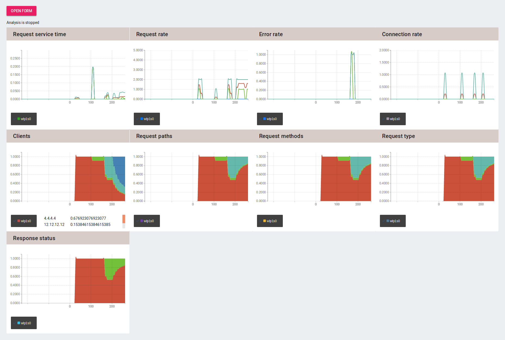

Monitoring tool Software
documentation
Laetitia Fesselier
laetitia.fesselier@mail.mcgill.ca
Supervisors: Mona ElSaadawy, Bettina Kemme
Distributed Information Systems Lab, McGill University
In today’s service-oriented platforms, application execution is distributed across
many components. Monitoring the performance of such a system is a critical
and challenging task. Most traditional monitoring techniques require an
integration on the application level, making the process platform dependent.
With the global rise of server virtualization, traditional network switches
are being gradually replaced with software-defined network controllers
(SDN switches) that rely on code as opposed to network bridges and
hardware.
The approach used in our research uses a customized port sniffer for software
switches, moving the monitoring logic on the network level by extracting useful
information from messages exchanged between application components.
By doing so, a more flexible, platform independent approach is offered.
To demonstrate the benefits of this approach, an application monitoring
prototype, restricted to http traffic as a first stage, was developed using an
existing http sniffer software which was extended to behave as a server service to
perform different analysis tasks concurrently. Its architecture was re engineered
with some performance improvement.
On the current implementation, the monitoring service requires a network interface, along with an analysis interval and duration, desired metrics and an optional client. Improvements are planned to allow the user to provide services’ IP in replacement to the network interface, and to automatically detect the corresponding network interface’s name they are connected to.
Extract information from the packets flowing over the provided network interface.
Requested metrics are sent to the user every given interval.
Requested metrics are sent to the user during the given duration.
Filter the packets, keeping only the ones with the given client or source.
After each time interval, compute the average Request service time (avg) and return, within this interval, the shortest (min) and longest rst (max). The request service time is the time difference between a response and the request it refers to.
After each time interval, compute the average request rate (avg) and return, within this interval, the lowest (min) and highest request rate (max). The request rate is the number of received requests over a second.
After each time interval, compute the average error rate (avg) and return, within this interval, the lowest (min) and highest error rate (max). The error rate is the number of received responses with a 4XX or 5XX HTTP status code over a second.
After each time interval, compute the average throughput (avg) between two addresses in each flow direction. Return, within this interval, the lowest (min) and highest throughput (max) in each flow direction. The throughput is the number of bytes travelling between two addresses over a second.
After each time interval, compute the average connection rate (avg) and return, within this interval, the lowest (min) and highest connection rate (max). The connection rate is the number of distinct request source address (IP/port combination) over a second.
After each time interval, compute all received (starting from the beginning of the analysis) clients cumulative distribution. A client is a distinct request source IP, ignoring the port value. All frequencies below 0.01 are ignored.
After each time interval, compute all received (starting from the beginning of the analysis) request paths cumulative distribution. A request path is a distinct path extracted from the request URI (see dirname()). All frequencies below 0.01 are ignored.
After each time interval, compute all received (starting from the beginning of the analysis) request methods cumulative distribution. A request method is a distinct basename extracted from the request URI (see the POSIX version of basename()). All frequencies below 0.01 are ignored.
After each time interval, compute all received (starting from the beginning of the analysis) request types cumulative distribution. A request type is a keyword within the valid HTTP request methods. All frequencies below 0.01 are ignored.
After each time interval, compute all received (starting from the beginning of the analysis) response status cumulative distribution. A response status is an code within the valid HTTP status. All frequencies below 0.01 are ignored.
The monitoring service is made-up of three components: a frontend (JS/Node.js),
a backend (Rust), and a sniffer (C). It follows a distributed architecture.
Users who want to monitor the performance of an application (in Figure 1.2.1
depicted with a web- server/ database / memcache architecture) provide their
requirements through a form (Figure 2.1.1) and receive these performance
measurements through a dashboard (Figure 2.1.2).
Once submitted, users specifications are transmitted in JSON through a
WebSocket to the backend. The backend compresses the received message using
Protocol Buffers, and forward it to the sniffer server through a TCP socket. The
sniffer can then proceed to the analysis and return back the results to the
frontend, using the same pathway.

Figure 1.1.1 - Monitoring Application integration in a Cloud system
To access the hosted frontend component:
The Express server listens for http requests on the 3000 port. To reach
the frontend server from an external server, use the following address:
http://bmj-cluster.cs.mcgill.ca:12230/
To access the hosted backend component (Docker container):
The backend program opens a websocket connection listenning on the 80 port To
send an incomming request to the websocket from an external server, use the
following address: http://bmj-cluster.cs.mcgill.ca:15480/
To access the hosted sniffer component:
The sniffer program opens a tcp connection listenning on the 3000 port To send
an incomming request to the socket from an external server, use the following
address: http://bmj-cluster.cs.mcgill.ca:15430/
After proceeding to the local installation of each component (see section 2.2, 3.1, 4.1 and 5.1), you can locally run the application with the following procedure:
Get a list of all available interfaces to inspect
All the source code of the project can be find in the following private repository:
https://github.com/laemtl/monitoring_tool.git
Main dependencies: Node.js, npm, PM2, Express, Vue, Rickshaw
The frontend component has two purposes. First, it is the component where an
application administrator can indicate what kind of performance monitoring
should be performed on their application. For that, the frontend provides a
form to collect the relevant information (choice of performance metrics,
source, destination, analysis duration) (Figure 2.1.1). Second, the frontend
shows the performance results over time in near real-time (Figure 2.1.2).
The frontend part is built on top of Vue.js, a reactive js framework, and
Ricksaw.js (Shutterstock), a graphing library using D3.js.
Once an administrator has provided the details of what should be monitored, the
frontend sends this information to the backend in json. The frontend
receives then the performance results for visualization from the backend.
Communication between frontend and backend is done via a bidirectional
and persistent WebSocket (where the frontend is the client initiating the
communication and the backend is the server accepting connections).
To serve the static frontend files, a simple Express (Node.js) server is used.
We also make use of PM2, a production process manager for Node.js applications
with a built-in load balancer. It allows us to keep our application alive forever, to
automatically reload it without downtime if it exits, and to facilitate common
system admin tasks.
The current UI was built using the Vuetify framework. The user can expand a
form from the left side, over the ten metric graphs. This interface is customizable,
each matric can be deselected using the form and the corresponding graph
disappears from the screen.

Figure 2.1.1 - Front-End form options

Figure 2.2 - Front-End analysis result
Install nvm (be sure /.bash_profile exists first)
Install nodejs 10.8.0
Clone the github repository:
Install all Node.js dependencies:
Run in dev mode:
Under the dev mode, Express is not needed.
Build the static files for production:
Start the Express server:
The frontend component lies under /nodejs-frontend.
- index.js: Main file of the Express server.
- node_modules: After npm install is invoked, contains all the dependencies of the project.
- dist: After a build is invoked, contains all the static files ready fo production.
- src: Contains all the Vue source files.
- App.vue: Main template file of the Vue frontend.
- main.js: Main js file of the Vue frontend.
- components/SystemForm.vue: Form template file.
- components/SystemResultGraph.vue: Graph template file.
Main dependencies: Actix-web, Rust-protobuf
The backend, developed in Rust, is mainly a broker between the frontend clients
and the sniffers that enables a unified web-based interface for users to the
monitoring platform. It forwards the specific monitoring requests from the clients
to the relevant sniffer and receives the performance measurement results from the
sniffers to be forwarded to the clients. It might also perform some analysis tasks
itself should they be too time consuming to be executed at the sniffers that have
to work at network traffic speed.
Rust is a new compiled language, which is pretty fast (execution time benchmarks
show it performs faster than c++) and safer because of a lot of protection
mechanisms on compilation time. It also comes with a web server ecosystem which
makes it a good choice for a web server. Finally, it can compile in web assembly,
which makes it also a good choice to develop frontend features. Apart of the
WebSocket connections with the active frontend clients, the backend also
maintains a bi-directional TCP socket with each of the sniffers. For better
performance, the messages sent over TCP are compressed using Google Protocol
Buffers.
Install rustup, the Rust installer and version management tool
Run in dev mode:
Build the static files for production:
Launch the executable:
The backend component lies under /rust-backend.
- build.rs: Build script, fired at each compilation.
- Cargo.toml: Configuration file, contains all the dependencies.
- target: After a build is invoked, contains all the executable, either for debug or release.
- src: Contains all the Rust source files.
- analysis.rs: Handle the Protocol Buffer messages declared in ../analysis.proto.
- main.rs: Main file of the Rust backend.
For better performance, the messages sent over TCP are compressed using Google Protocol Buffers. In particular, the encoding uses prefix varints which efficienly reduces the size of each transmitted message.
All the instructions to proceed to the installation can be found here:
https://github.com/protocolbuffers/protobuf/blob/master/src/README.md
The sniffer also requires the protobuf-c plugin.
protobuf-c requires a C compiler, a C++ compiler, protobuf, and pkg-config to be
installed, along with the autotools (autoconf, automake, libtool).
Note that as of version of 1.0.0, the header files generated by the protoc-c
compiler contain version guards to prevent incompatibilities due to version skew
between the .pb-c.h files generated by protoc-c and the public protobuf-c.h
include file supplied by the libprotobuf-c support library. Thus, it’s a good idea to
recompile the .pb-c.c and .pb-c.h files from their source .proto files with protoc-c,
rather than shipping potentially stale .pb-c.c and .pb-c.h files that may not be
compatible with the libprotobuf-c headers installed on the system in project
artifacts like repositories and release tarballs.
All the message formats are defined in the file ./analysis.proto. Whenever this
file is modified, we need to recompile files which contains data structure
definitions and helper functions to support the protocol under C and Rust.
Compile the c Protobuf files:
Compile the Rust Protobuf files:
The configuration file for all defined messages lies in ./analysis.proto.
Main dependencies: protobuf-c
The sniffer is a component that is attached to the software switches of the cloud
that route the cloud traffic. The sniffer, written in C, listens to relevant network
traffic and performs some of the performance analysis on the fly by analyzing
specific network messages. For doing such analysis work, the sniffer reads and
extracts all the information needed from the network packets. The information is
then stored in different data structures, typically hashtables (e.g., one for client
relevant information, one for paths, etc.). In given time intervals, the individual
metrics such as average response times are then computed. On a regular basis, the
results are sent to a backend analysis server. The sniffer requires the network
interface name of network flows to be observed, and some analysis configuration
(interval, duration, metrics choice). It can run several analysis at the same
time.
If gcc is already on the system, nothing is needed besides protobuf-c (see section 4.1), SCons (needs Python), and the c libraries pthread, pcap, json-c.
The sniffer has the capability to run under 3 modes:
- offline;
- live standalone;
- live server;
The sniffer was heavily modified for the current implementation, and offline
functionality has not has been tested yet. There may be some adjustments needed
in order to make it work properly.
Amongst the improvements made, we reduced the latency between each packet
capture, minimizing the risk of packet drop, by delaying the packet processing and
filtering process. Instead, the thread handling the capture save each packet
in a queue and let another thread doing the filtering/processing task.
The live standalone mode may benefit from some additional flags in order to offer
the same functionalities as the interface/server mode as a future improvement.
Under the server mode, a thread opens a TCP connection, listenning for incoming
request.
The program uses 7 other threads for each analysis routine:
- job_pkt: process the raw packets queue, discarding non HTTP packets ;
- job_pkt_q: process the queue of filtered HTTP packets, converting them to flows
;
- job_flow_q: process the flows which have received their last packet (connection
closed) ;
- job_scrb_htbl: clean all the remaining flows ;
- timer: manage the interval and duration timers ;
- capture: capture all the packets on the given interface placing them in a
raw_pkt queue.
Each of these threads shares common variables. The Data struct (see
data.h) stores all these common variables. When a new analysis is spawned,
a block of memory is allocated to store a Data block, and its pointer
is stored in a pthread_key_t, a thread-specific variable. This strategy
allows us to read/write elements of these common variables from anywhere
within theses 4 threads functions. It act as a thread safe global variable.
The pthread_key_create() function shall create a thread-specific data key visible
to all threads in the process. Key values provided by pthread_key_create() are
opaque objects used to locate thread-specific data. Although the same key
value may be used by different threads, the values bound to the key by
pthread_setspecific() are maintained on a per-thread basis and persist for the life
of the calling thread. https://linux.die.net/man/3/pthread_key_create
The sniffer component lies under /c-http-sniffer.
- SConscript: Compilation configuration file.
- protobuf-c.c: protobuf-c library.
- analysis.pb-c.c: File generated by protobuf-c.
- client.c, conn.c, req_path.c, req_type.c, rsp_status.c: Metrics computation.
- data.c: Flows and pairs processing, metrics computation.
- flow.c
- flow_hash_table.c
- flow_queue.c
- hash_table.c
- http.c
- main.c: Main file of the sniffer program. Detect the mode and spawn the major
threads.
- order.c
- packet.c: Packet library.
- packet_queue.c
- queue.c: Queue library.
- raw_pkt_queue.c
- server.c: Server functionalities.
- tcp.c
- timer.c
- util.c: Helper functions.
./ycsb run jdbc -P ../workloads/workloadc -p jdbc.driver=com.mysql.jdbc.Driver
-p db.url=jdbc:mysql://172.16.1.8:3306/YCSB -p db.user=root -p
db.passwd=root -s -threads 20 -target 0 -p measurementtype=timeseries -p
timeseries.granularity=20000
To compile and execute the program:
cd c-http-sniffer/
scons
Run in Standalone mode:
./bin/http-sniffer -i interface
Run in Server mode:
./bin/http-sniffer
Traffic can be simulated with the following two tools: YCSB, a modified benchmark tool and ScapyTrafficGenerator, a network traffic simulator to test our system.
YCSB is originally a database benchmark where a YCSB client sends requests
to a database. Our extended version has added a Tomcat webserver as
frontend for the client (which was modified to communicate with the
Tomcat server); the Tomcat server has access to a MySQL database and a
Memcache server. Each component is deployed in a separate container and all
containers are connected by an OVS switch configured via Openflow.
The clients submit a predefined workload of HTTP requests to the web
server whereby each request retrieves data from either the database or the
memory cache. Recent results are cached in the Memcache server. The
data-base schema and the query requests follow the YCSB benchmark.
Log on the docker container hosting YCSB:
Configure the traffic simulation duration:
Start YCSB:
The relevant documentation can be found here: https://pypi.org/project/ScapyTrafficGenerator/
Start ScappyTG: